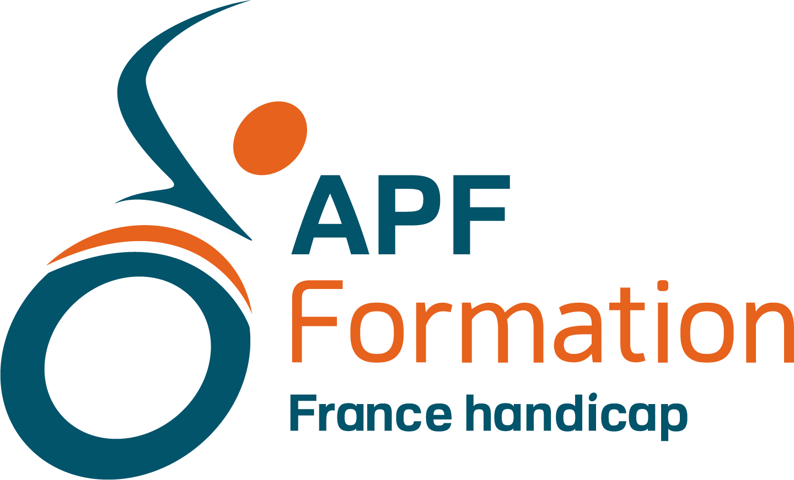

Maîtrisez l'Extranet Formateur Dendreo afin de préparer, animer et clôturer vos formations avec efficacité, tout en respectant les exigences du référentiel Qualiopi.
1er janvier 2027
14h00 - 15h30
Formation à distance
9-11 rue Clisson
75013 Paris
Découverte des menus et des principales fonctionnalités.
Accès à la liste des participants, questionnaires de besoins, attentes et auto-positionnements.
Utilisation des différents espaces de stockage et de partage selon les destinataires.
Signature des participants, prolongations, gestion des situations particulières.
Quiz, évaluations, bilan formateur, gestion des tickets qualité et suivi des améliorations.
Dépôt des factures et notes de frais, points de vigilance administratifs.
Cette formation est accessible aux personnes en situation de handicap. Pour toute demande d'aménagement ou de compensation, contactez APF Formation avant le démarrage de la session.
Consulter la politique d'inclusion et de gestion du handicap